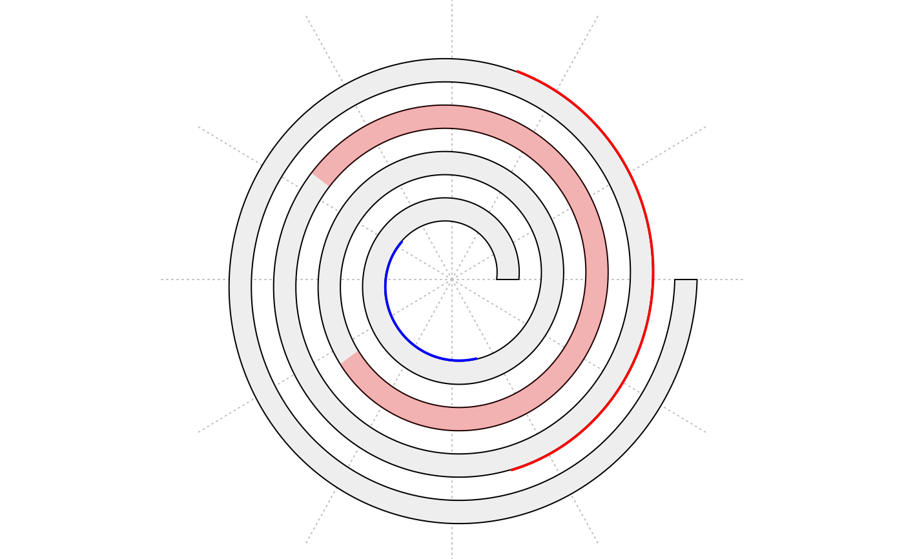

spiral_highlight.RdHighlight a section of the spiral
spiral_highlight(x1, x2, type = c("rect", "line"), padding = unit(1, "mm"), line_side = c("inside", "outside"), line_width = unit(1, "pt"), gp = gpar(fill = "red"), track_index = current_track_index())
| x1 | Start location of the highlighted section. |
|---|---|
| x2 | End location of the highlighted section. |
| type | Type of the highlighting. "rect" means drawing transparent rectangles covering the whole track. "line" means drawing annotation lines on top of the track or at the bottom of it. |
| padding | When the highlight type is "rect", it controls the padding of the highlighted region. The value should be a |
| line_side | If the highlight type is "line", it controls which side of the track to draw the lines. |
| line_width | Width of the annotation line. Value should be a |
| gp | Graphics parameters. |
| track_index | Index of the track. |
spiral_highlight(0.4, 0.6)spiral_highlight(0.1, 0.2, type = "line", gp = gpar(col = "blue"))spiral_highlight(0.7, 0.8, type = "line", line_side = "outside")